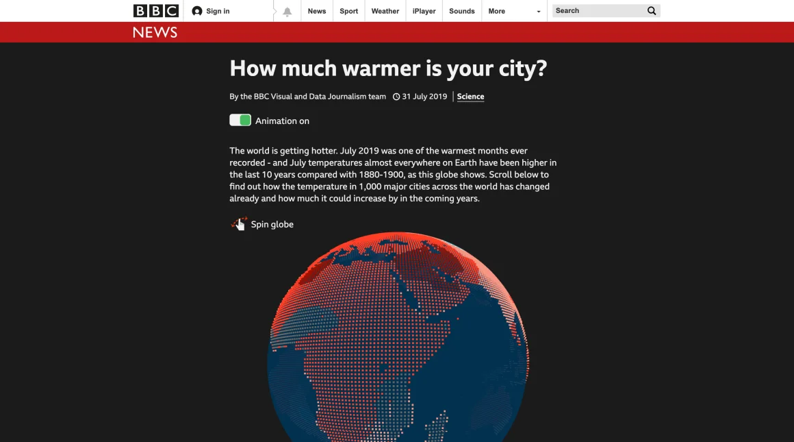
BBC News
How much warmer is your city?
An award winning interactive article to showcase temperature change, and its impact, in 1000 major cities around the world.
Read the case studyI build interactive stories for people exploring data and tools for the people who publish them. Here’s a selection from my work at BBC News, Flourish, and freelancing.
CASE STUDIES

BBC News
An award winning interactive article to showcase temperature change, and its impact, in 1000 major cities around the world.
Read the case study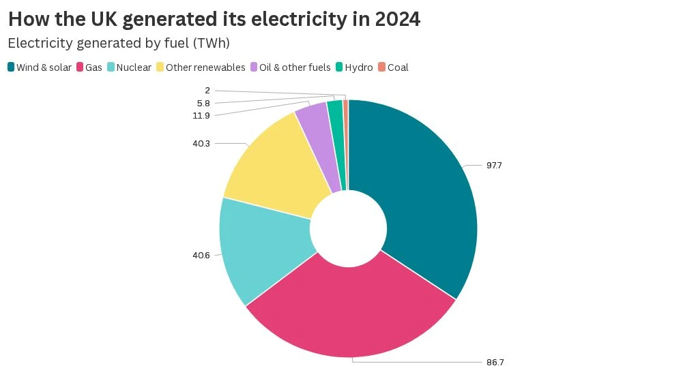
Flourish
External labels on pie charts was a long requested feature from users, but much more complex than it appeared.
Read the case study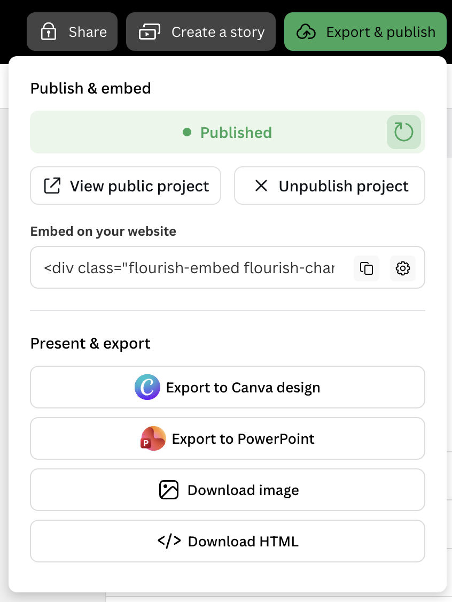
Flourish
I led development of Flourish’s redesigned publishing and export dialog, replacing the legacy interface with a React UI that made publishing status and available actions clearer.
Read the case study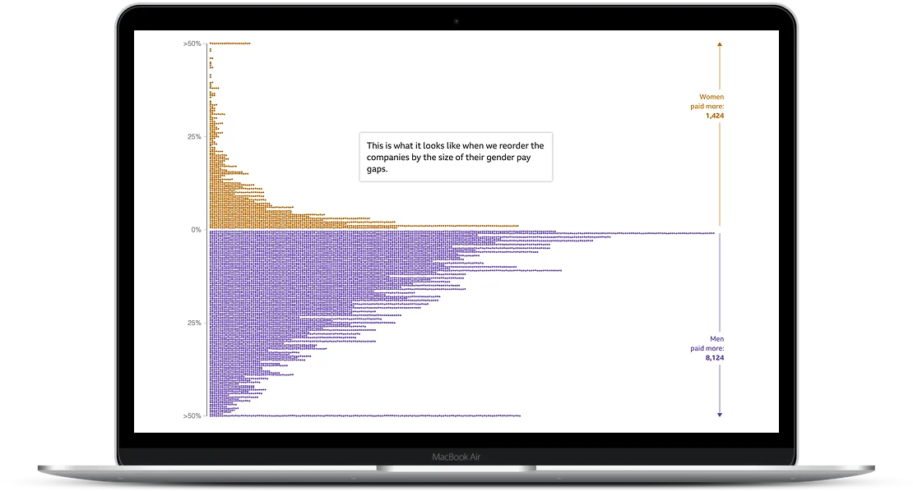
BBC News
I pioneered Visual Journalism's first use of scrollytelling, using WebGL to animate more than 10,000 dots to reveal the pattern across the UK.
Read the case study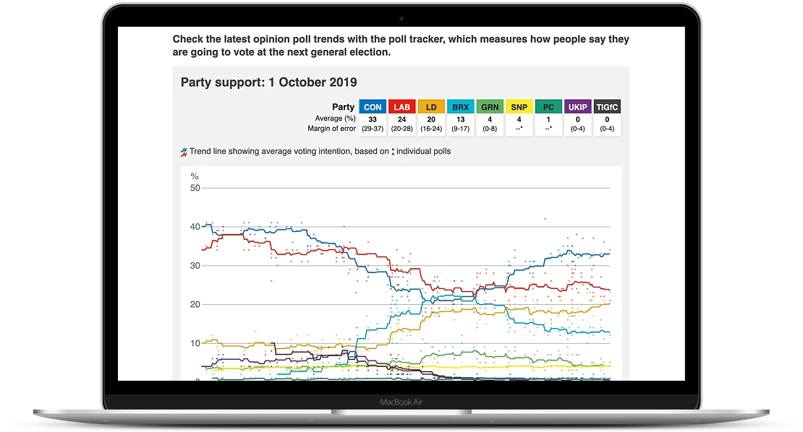
BBC News
I built the polling chart and a Slack publishing workflow so journalists could update the tracker when polls came out on Sundays. This deployment strategy fundamentally changed how the department could work.
Read the case study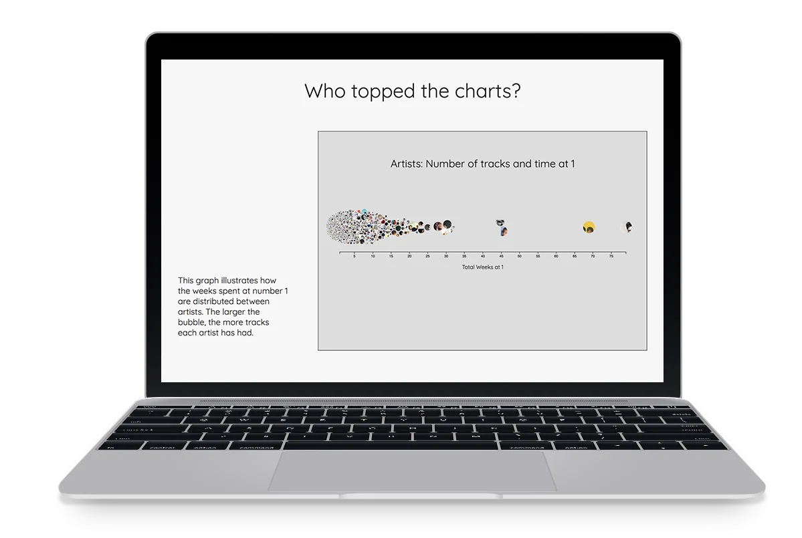
Final-year project
For my final-year project, I built an interactive story about six decades of UK number ones, from collecting the chart data to making charts readers could explore and songs they could listen to. In 2018, Bob the Builder had the same number of UK number ones as Adele.
Read the case studyI like building things that are fun to explore. I want everyone to be able to enjoy them, so I’m curious about what might get in the way and what I can do about it.
Animations can make some readers feel unwell. At BBC News, I introduced a toggle so readers could switch them off before they started.
Chart popups often hold the details you’re looking for. At Flourish, I made those details available by keyboard so people could explore the chart without a mouse.
Dragging takes a steady, continuous gesture. At Flourish, I added a tap option so readers could complete the same action with a single touch.
OTHER PUBLISHED WORK
 GLOBAL ENERGY MONITOR · ENERGY DATA
GLOBAL ENERGY MONITOR · ENERGY DATA
I built a dashboard that lets readers pick a country and see where coal plants are opening or closing, with one selection driving several charts.
Read the project write-up ↗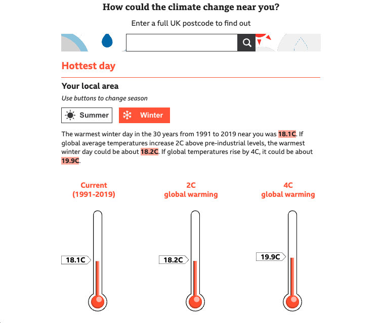
BBC NEWS · MET OFFICE COLLABORATIONI loved working on the animations for this BBC News and Met Office tool that let readers enter a UK postcode to explore local projections for heat and rainfall.
Explore the climate tool ↗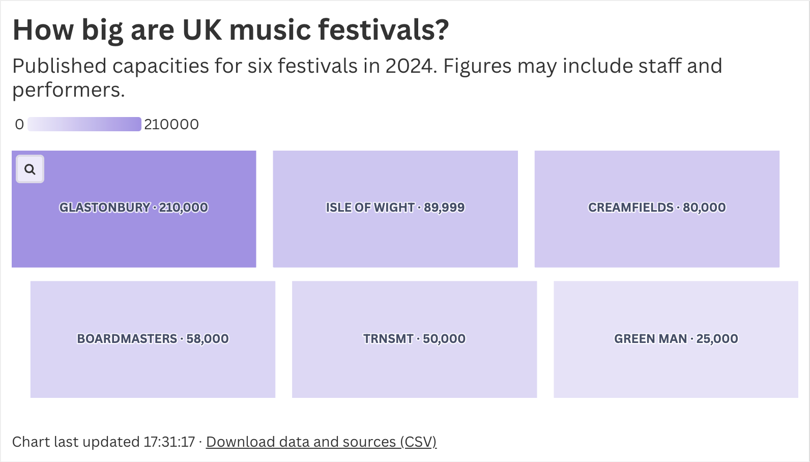
FLOURISH · PRODUCT ENGINEERINGI added features to enable users to download the data behind a chart and see when it was last updated. A small but important part of making data visualisations more transparent and trustworthy.
See an example ↗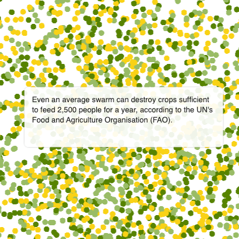
BBC NEWS · SCROLLYTELLINGI used CSS animation, D3 and REGL to bring the transformation of a locust swarm to life, with an animation toggle and a graceful no-JavaScript fallback.
Read the story ↗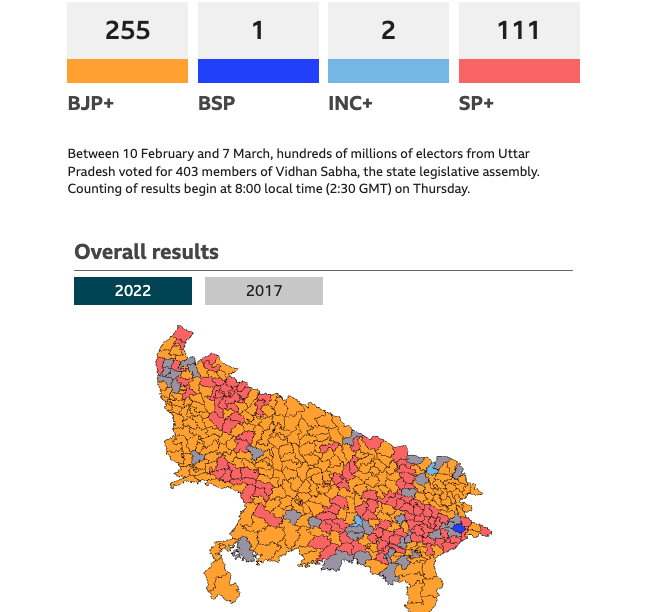
BBC NEWS · LIVE ELECTION RESULTSI helped build a live results counter, election map and constituency lookup for the BBC. Each had a version for each region, including Uttar Pradesh.
View the Uttar Pradesh results ↗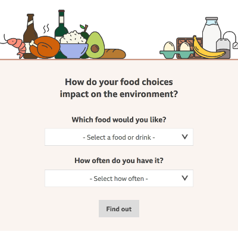
BBC NEWS · CLIMATEHow does your lunch compare with driving a car or taking a shower? I led development of a BBC News calculator that put the climate impact of food choices in everyday terms. We built it in under three weeks, designing for keyboard and screen-reader use and adapting the examples for different language editions.
Use the calculator ↗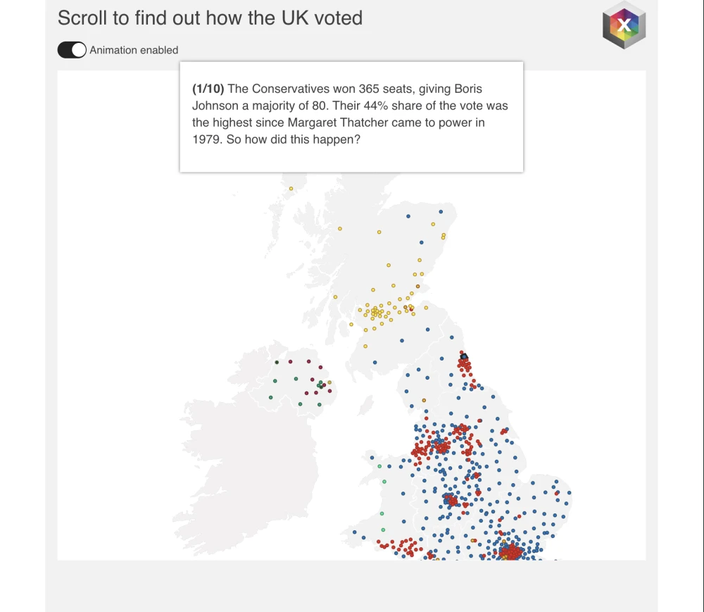
BBC NEWS · SCROLLYTELLINGA couple of days before the election, I built a ten-step tour of the 2019 results, using animated Mapbox maps to show how the vote played out across selected constituencies. Journalists could fill in the content and deploy as soon as results were ready.
Read the story ↗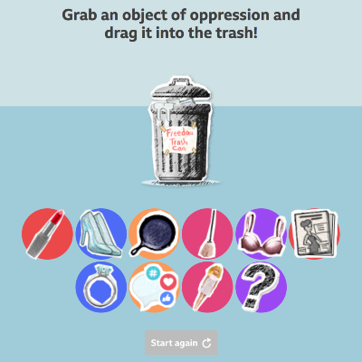
BBC NEWS · INTERACTIVEI led development of a BBC 100 Women interactive where readers could throw away objects they felt held women back. We built keyboard and screen-reader alternatives to dragging and published it in 25 languages.
Read the story ↗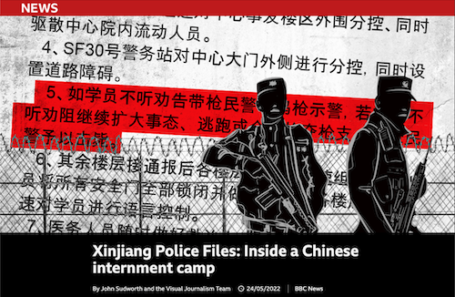
BBC NEWS · INVESTIGATIONI was part of the development team for this embargoed BBC investigation. It was tricky to get videos to autoplay with the scrolly within the BBC’s publishing infrastructure.
Read the investigation ↗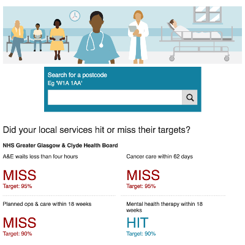
BBC NEWS · HEALTH DATAI helped build the BBC’s NHS Tracker so readers could check waiting times for local services. I later led the update that added mental health therapy data and mentored two junior developers on the project.
Read the tracker ↗ FLOURISH · PRODUCT ENGINEERING
FLOURISH · PRODUCT ENGINEERING
I helped bring Flourish Presenter to Canva Business, working on account linking, subscription flows and access to paid features.
Read the Flourish Presenter FAQ ↗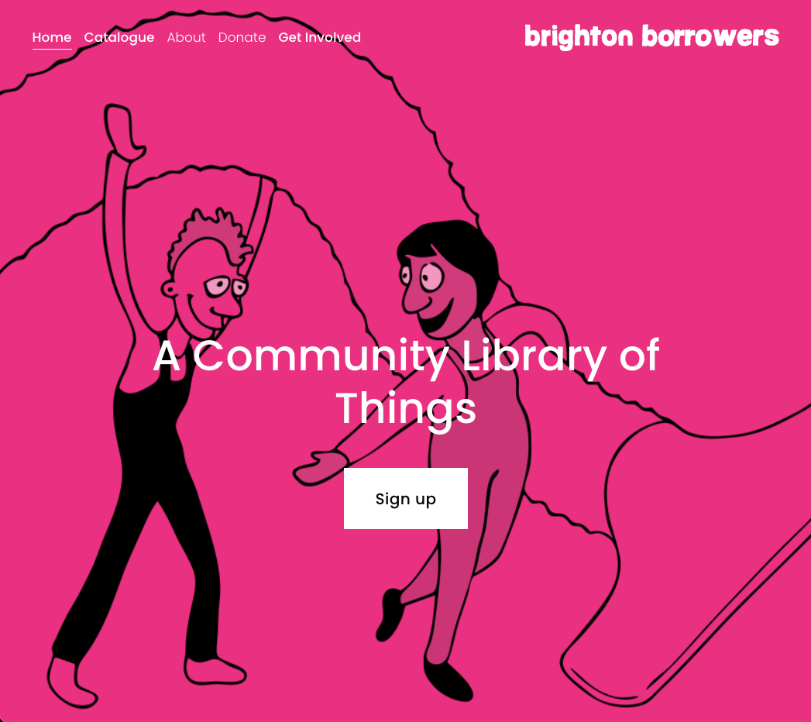
Freelance · Community ProjectI designed and built the website for Brighton Borrowers, a community library where people can borrow tools and other household items.
Read the story ↗HOBBY PROJECTS
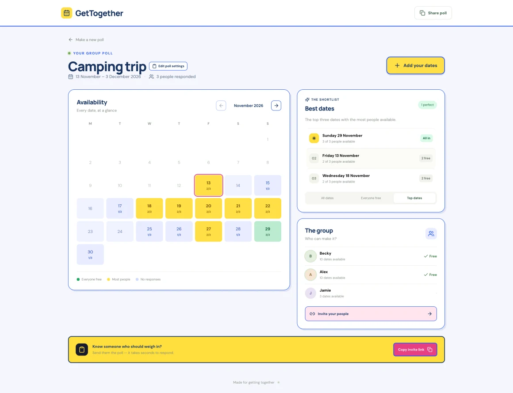
I got bored of yet another WhatsApp poll and the constant back and forth messages, so I created a calendar app to find dates when the whole gang is free.
Have a play ↗Green Man doesn't make an app, so I created my own for making a schedule, identifying clashes sharing with friends and discovering new music.
An immersive online and VR experience made for the NASA Space Apps Challenge. I created its soundtrack from NASA audio and original music.
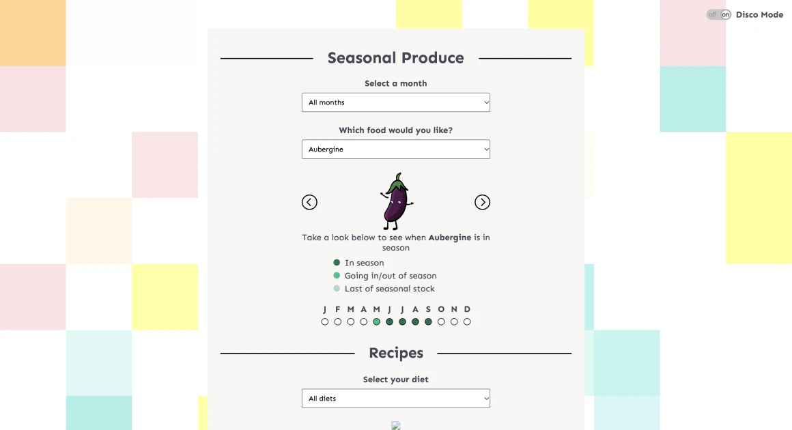
Never know when your favourite veg is in season? I worked with a pal to find out and created a fun way to explore seasonal produce. Check out the disco mode!
Visit the prototype ↗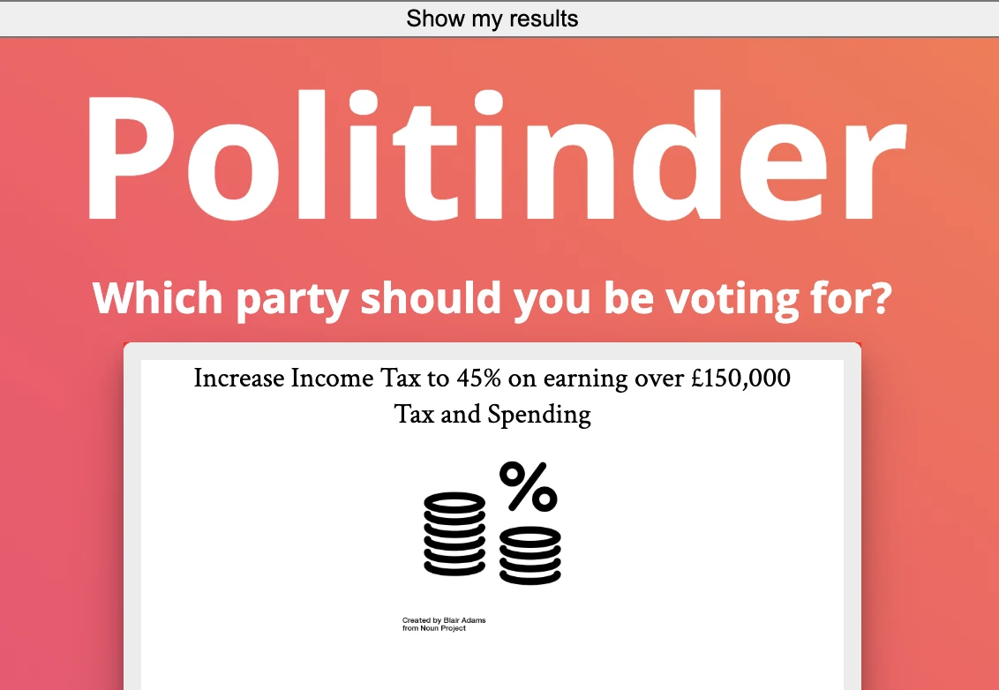
Tinder for Politics! Swipe on the policies you like and see which party matches your views. Worked with a pal to scrape the data and build a fun app to find out who you should vote for.
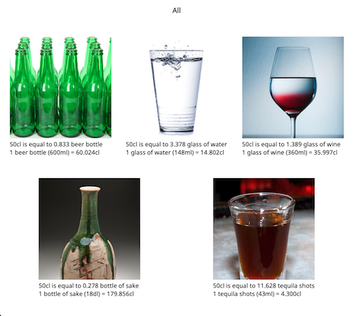
Winning hack project at SwissInfo. For English readers we always measure distance in football pitches. What are the culturally relevant examples in other countries?
Visit the prototype ↗WRITING & SPEAKING
Want the timeline and details in one place?
Read my CV